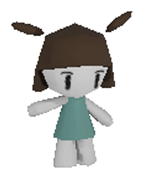
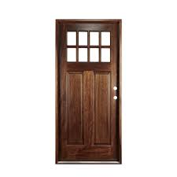

I am an artist working across sculpture, video, games, and web-based media. My practice focuses on what is often overlooked: minor memories, invisible processes, and elements that fall outside social norms.
I approach digital media not as a tool, but as a system that shapes perception—structuring what becomes visible and what is erased. Through interactive and time-based works, I explore how unseen layers accumulate to form our understanding of the world.
I am particularly interested in the sense of worldhood and agency within digital environments, treating them as autonomous systems with their own internal logics. My work invites viewers to reconsider the boundaries between visibility and invisibility, and how we perceive and inhabit the worlds around us.
